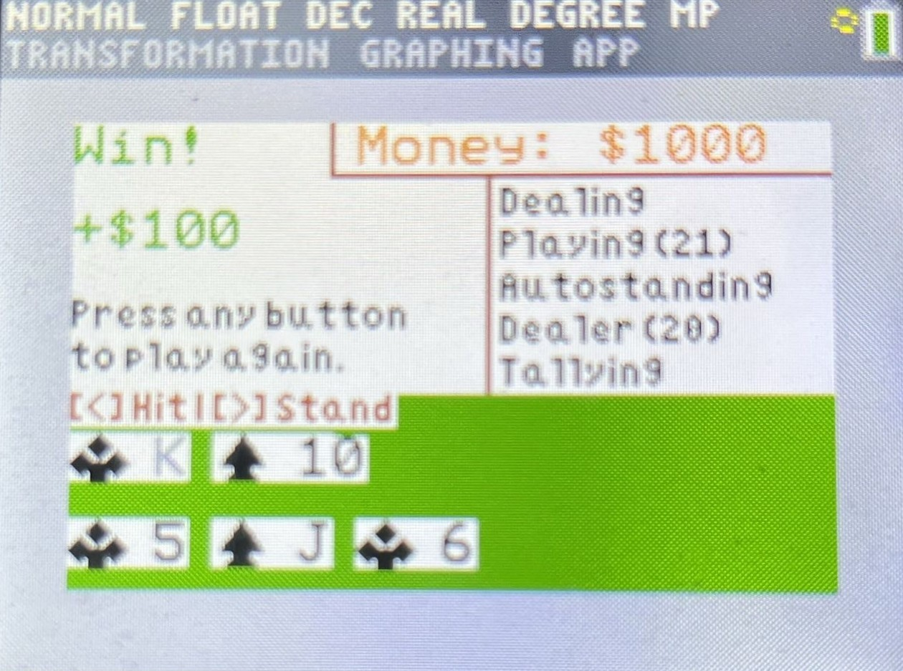

High school junior focused on Low-Level Computer Architecture and High-Level Software Systems.
About Me
I am a high school junior with interests in all levels of abstraction in computer science. I
have experience in Python, Java, and C++. Specifically, I work in Minecraft modding, computer architecture,
machine learning, game development, and Python automation. Along with my other open-source contributions, my
Minecraft mods have over 30,000 cumulative downloads for their contribution to the community. Feel free to
contact me!
Projects
Artificial Neural Network Research Project
Developed AI models for image recognition and categorized thousands of images into 30
classifications. I measured the accuracy and efficiency of each model to find the model parameters
with the highest performance.
Created a Minecraft mod for the latest versions that removes vanilla enchantment restrictions and
anvil limitations. The mod allows users to customize their game with a variety of settings and
create their ideal experience.
Fabric API • Java • Minecraft Modding • Cloth Config API
Arduino and Breadboard Circuits
Designed electrical circuits using breadboards and Arduino microcontrollers. Created a clock, a
Simon-inspired sequence memory game, and a programmable piano.
Microcontrollers • Breadboards • Arduino • C++
TI-84 Calculator Programming
Developed and ported games to the TI-84 Calculator using TI-Basic, so that they are able to natively
run on the device without modifications. Games include Blackjack, Minesweeper, and Wordle.

TI-84 • TI-Basic • Hardware Restrictions • Game Porting
Automated Sheet Music Web Scraping
Designed a web-scraping program to automatically download and archive public domain sheet music. The
script uses an automated web browser to bypass download paywalls for open-access content, and it
stores the music as local PDF files.
Selenium • Web Scraping • Automation • Chromedriver • Archiving